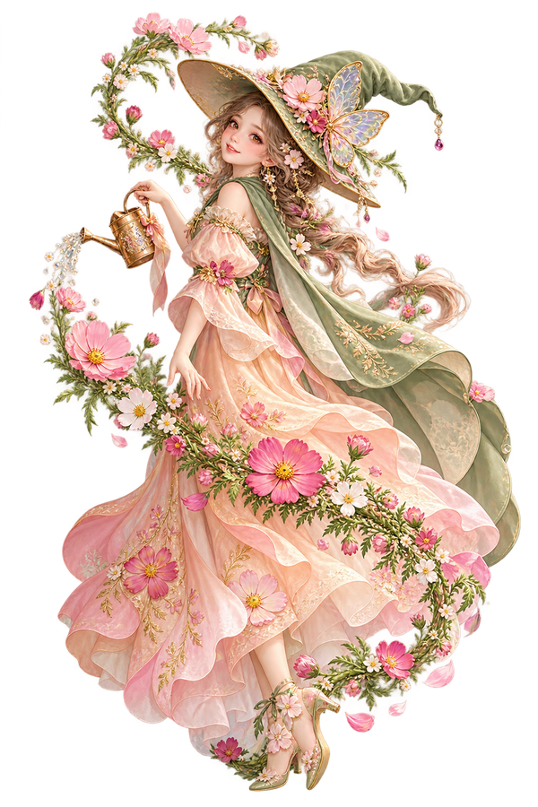

写真 01
ご本人・ふるさとなどの写真
ご提供後に差し込みます
山の見える町に生まれて
山の見える町で、季節を感じて育ちました。ふるさとの花や空気が、心の中に根をおろしています。

このデザイン専用・花の魔女
「なし」でキャラクターを隠せます。別のキャラクターは、対応するデザインで選べます。
人物・経歴はすべて架空です。装飾は生成イラスト、ご本人の写真は未提供の枠で示しています。
B05 庭の四季・花の魔女
一輪の花から、ひろがった世界。
本の中の好きな言葉や、友人と交わす手紙。学生時代には、言葉が気持ちを育ててくれました。
お店の仕事では、包む丁寧さと、聞く優しさを学びました。ひと言添えると、表情が和らぐことがあります。
家族の食卓は、日々の根をおろす場所。楽しい話も困った話も、ともに過ごした時間が大切です。
暮らしには、何度でも春が来る。
暮らしが変わっても、新しい楽しみは芽を出しました。日常の小さな美しさを、見つけながら歩んできました。
身近な風景に囲まれて育つ。
人との出会いから、少しずつ世界が広がる。
その年の世の中：東京オリンピック開催 日本オリンピック委員会
目の前のことに向き合いながら歩む。
その年の世の中：大阪で日本万国博覧会開催 外務省
暮らしの中に、新しい楽しみを見つける。
その年の世の中：元号が平成から令和へ 内閣府
感謝と小さな希望を胸に、時を重ねる。
趣味・大切な品などの写真
ご提供後に差し込みます
咲く日も、雨の日も。
針を進め、花を飾り、好きな歌を口ずさむ。心が弾む時間を、毎日の中で育てています。
友人と出かけた温泉の町。車窓の景色と、道に迷って笑った時間が、今も心を温めます。
手作りの袋を喜んでもらえた日。相手を思って手を動かした時間が、嬉しい実りになりました。
うまくいかない日は、話を聞く人に助けられました。雨の季節にも支えがあると、気づいたのです。